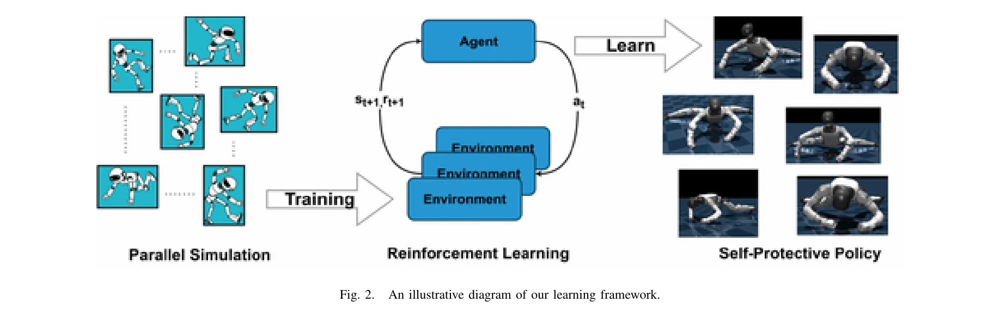

Essence

Fig. 1.
Deep Reinforcement Learning과 Curriculum Learning을 이용하여 인간형 로봇이 낙상 상황에서 자체적으로 보호 행동을 발견하도록 학습시키며, 팔을 삼각형 구조로 형성하여 낙상 손상을 최소화하는 방법을 제시한다.
저자: Diyuan Shi, Shangke Lyu, Donglin Wang | 날짜: 2025-12-01 | DOI: 10.48550/arXiv.2512.01336
Fig. 1.
Deep Reinforcement Learning과 Curriculum Learning을 이용하여 인간형 로봇이 낙상 상황에서 자체적으로 보호 행동을 발견하도록 학습시키며, 팔을 삼각형 구조로 형성하여 낙상 손상을 최소화하는 방법을 제시한다.
Fig. 1.

Fig. 2.
총평: 이 논문은 DRL과 Curriculum Learning을 통해 인간형 로봇이 자신의 물리적 특성에 맞는 낙상 보호 정책을 자율적으로 발견하도록 하는 혁신적 접근을 제시하며, 실제 로봇 플랫폼으로의 성공적 전이와 포괄적 벤치마크 구성으로 인간형 로봇의 안전성 향상에 중요한 기여를 한다.